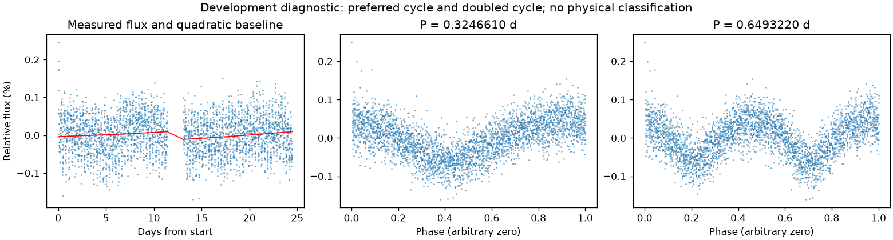
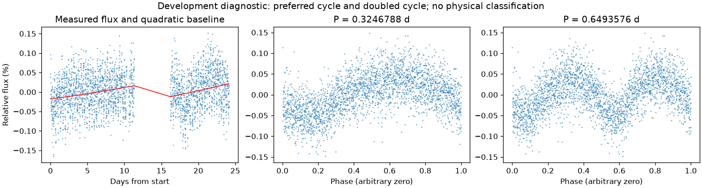
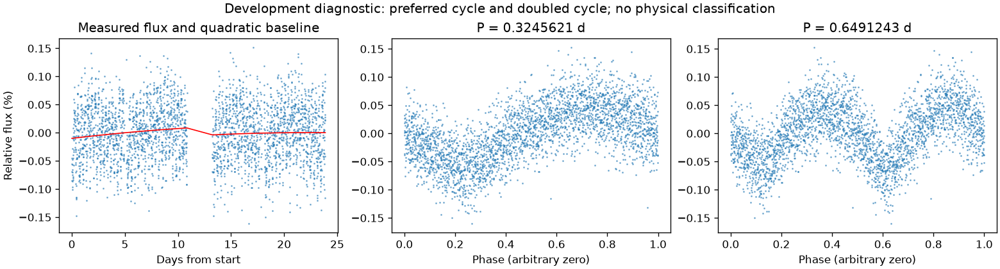
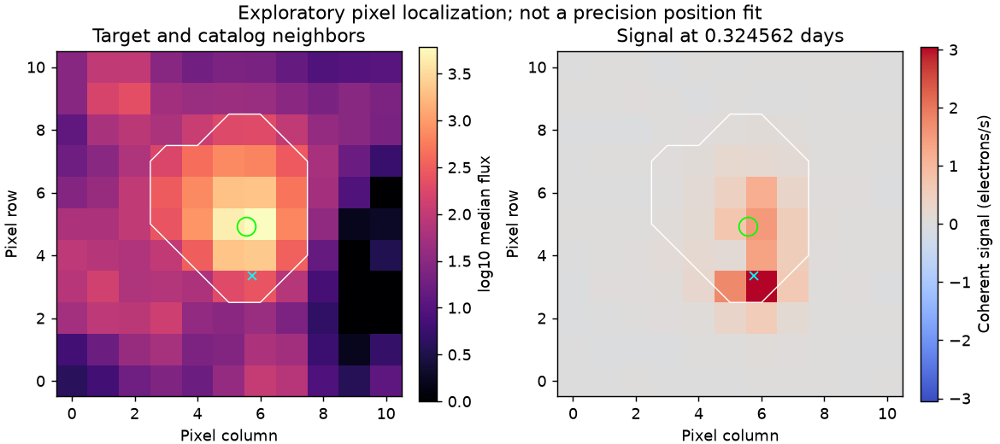

疑似邻星污染
亮度重复周期约 0.32466098 天。仍保留完整绕转周期的歧义。
第二版周期：0.3246609817780067 天；状态：preferred_lightcurve_cycle。

左图红线是缓慢基线；右面两图去除该基线。若未通过周期要求，两图只展示得分最高的竞争解释。
| 竞争周期（天） | 交替周期预测改善 | 两组各自改善 | 通过初筛 |
|---|---|---|---|
| 0.3246610 | 49.3% | 44.7% / 53.8% | 是 |
| 0.6491381 | 49.2% | 47.6% / 50.9% | 是 |
| 0.3193407 | 23.8% | 23.4% / 24.2% | 是 |
| 0.1649093 | 17.7% | 16.6% / 18.9% | 否 |
| 0.6538822 | 13.6% | 13.3% / 13.9% | 否 |
| 0.6438240 | 6.5% | 7.1% / 5.9% | 否 |
| 0.3311527 | 2.5% | 2.8% / 2.3% | 否 |
| 0.1595481 | -16.4% | -17.1% / -15.7% | 否 |
“预测改善”衡量用一组周期的形状预测另一组，比只有缓慢基线好多少；负数表示更差。搜索和预测共用了资料，因此这不是可信概率，也不是独立验证。
辅助数据检查：背景 SAP_BKG、指向修正 POS_CORR、亮斑中心 MOM_CENTR，或明确提供的仪器通道。
相关性只提示需要检查来源。恒星自身变暗也可能导致亮斑中心移动，不能据此断定是仪器。
第二版周期：0.32467879754220447 天；状态：preferred_lightcurve_cycle。

左图红线是缓慢基线；右面两图去除该基线。若未通过周期要求，两图只展示得分最高的竞争解释。
| 竞争周期（天） | 交替周期预测改善 | 两组各自改善 | 通过初筛 |
|---|---|---|---|
| 0.3246788 | 39.1% | 35.4% / 42.8% | 是 |
| 0.6493266 | 37.9% | 33.5% / 42.1% | 是 |
| 0.3193402 | 20.5% | 19.7% / 21.3% | 是 |
| 0.6615501 | 8.7% | 7.9% / 9.5% | 否 |
| 0.6368547 | 8.3% | 10.2% / 6.4% | 否 |
| 0.3306543 | 8.1% | 8.1% / 8.0% | 否 |
| 0.1650481 | -30.0% | -30.7% / -29.3% | 否 |
| 0.1595914 | -45.4% | -44.8% / -46.1% | 否 |
“预测改善”衡量用一组周期的形状预测另一组，比只有缓慢基线好多少；负数表示更差。搜索和预测共用了资料，因此这不是可信概率，也不是独立验证。
辅助数据检查：背景 SAP_BKG、指向修正 POS_CORR、亮斑中心 MOM_CENTR，或明确提供的仪器通道。
相关性只提示需要检查来源。恒星自身变暗也可能导致亮斑中心移动，不能据此断定是仪器。
第二版周期：0.32456212624806263 天；状态：preferred_lightcurve_cycle。

左图红线是缓慢基线；右面两图去除该基线。若未通过周期要求，两图只展示得分最高的竞争解释。
| 竞争周期（天） | 交替周期预测改善 | 两组各自改善 | 通过初筛 |
|---|---|---|---|
| 0.6491086 | 46.6% | 46.3% / 46.9% | 是 |
| 0.3245621 | 45.5% | 41.9% / 48.9% | 是 |
| 0.3193351 | 22.0% | 21.9% / 22.0% | 是 |
| 0.3331326 | 15.9% | 15.5% / 16.3% | 否 |
| 0.6442606 | 9.6% | 8.7% / 10.5% | 否 |
| 0.6545769 | 6.3% | 5.1% / 7.6% | 否 |
| 0.1652894 | -14.7% | -14.9% / -14.5% | 否 |
| 0.1595462 | -17.3% | -16.0% / -18.6% | 否 |
“预测改善”衡量用一组周期的形状预测另一组，比只有缓慢基线好多少；负数表示更差。搜索和预测共用了资料，因此这不是可信概率，也不是独立验证。
辅助数据检查：背景 SAP_BKG、指向修正 POS_CORR、亮斑中心 MOM_CENTR，或明确提供的仪器通道。
相关性只提示需要检查来源。恒星自身变暗也可能导致亮斑中心移动，不能据此断定是仪器。
